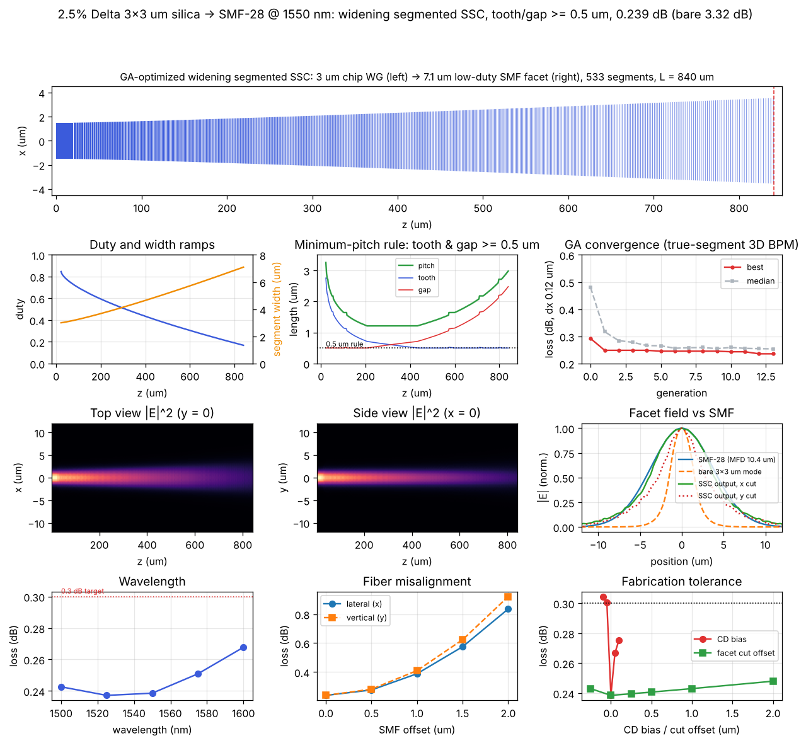
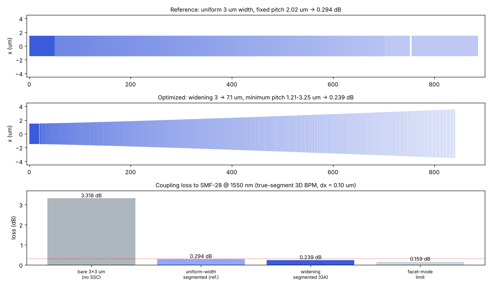

2.5% Δ silica channel waveguide (3×3 µm) ↔ SMF-28 at 1550 nm — segments that gradually widen on the narrowest pitch the mask rule allows (every tooth and gap ≥ 0.5 µm), optimized with a genetic algorithm driving a 3D BPM through the real tooth/gap geometry. Coupling loss 0.239 dB.
The last field is the mode-field diameter the SSC facet presents to the SMF (the optimized device delivers ≈ 11.5 × 10.0 µm, geometric mean ≈ 10.7 µm). Set it equal to the bare WG MFD to see the loss without a converter.
Gaussian–Gaussian overlap model for a quick estimate; the reported design numbers below come from the true-segment 3D BPM.
Mode field cross-section — blue: SMF Gaussian, red dashed: bare WG mode, green: expanded SSC-tip mode. Larger overlap with the SMF means lower loss.
Chip waveguide 3 µm solid (20 µm lead) → segmented section whose segments widen from 3 µm toward the SMF facet while their duty falls. Each period starts with a gap, then a tooth; the facet is cut at the end of the last tooth. The segment list is generated from a small gene vector:
| Variable | Meaning | Search range | Optimized |
|---|---|---|---|
L | Segmented-section length | 400 – 1500 µm | 819 µm |
W_facet | Segment width at the SMF facet (start = 3 µm) | 4.5 – 9.0 µm | 7.10 µm |
p_w | Width ramp exponent, w(s) = 3 + (W_facet − 3)·s^p_w | 0.4 – 2.5 | 1.19 |
d_start | Duty of the first segment | 0.70 – 0.90 | 0.846 |
d_facet | Duty at the facet | 0.15 – 0.35 | 0.167 |
p_d | Duty ramp exponent, d(s) = d_start + (d_facet − d_start)·s^p_d | 0.4 – 2.5 | 0.65 |
P_min | Global pitch floor (above the 2nd-order Bragg band) | 1.15 – 1.50 µm | 1.21 µm |
So the gap is pinned at 0.5 µm near the chip (high duty), the pitch drops to P_min = 1.21 µm through the mid-duty region where scattering would be strongest, and the tooth is pinned at 0.5 µm near the facet (low duty). Every tooth and gap is ≥ 0.5 µm by construction (1 nm grid, rounded up). The BPM is one-way, so contra-directional Bragg reflection is screened analytically by the band rule.
Loss = −10·log10 |⟨E_SMF | E_out⟩|² [dB] at the facet — taper radiation and facet mismatch both included.# ga_widen.py (excerpt)
def fitness(genes):
des = from_genes(genes) # WideningSSC: tooth list, DRC by construction
psi,_ = bpm.run(chip_mode, segmented_slices(des, grid, plat, dz=0.25))
return -10*log10(grid.overlap_raw(psi, smf)) # dB, smaller is better
# The mode solver and the BPM share the same 5-point Laplacian, so an eigenmode
# propagates unchanged (500 um self-overlap 0.99999999) -- no mode-beating artefact.
A pure-Python pipeline (tooth-list generator → self-written ADI 3D BPM with numba → genetic algorithm → gdstk) was run for the target spec: chip waveguide 3 µm × 3 µm solid on the left, 7.1 µm-wide low-duty SMF facet on the right, thickness fixed at 3 µm, every tooth and gap ≥ 0.5 µm.
| Quantity | Optimized value |
|---|---|
| Coupling loss @ 1550 nm (fine grid, dx = 0.10 µm) | 0.239 dB (η = 94.7 %) |
| Bare 3×3 µm WG ↔ SMF (no SSC) | 3.32 dB |
| Number of segments / total length | 533 / 840 µm (incl. 20 µm lead) |
| Width ramp (start → facet) | 3.0 → 7.10 µm |
| Duty ramp (start → facet) | 0.846 → 0.167 |
| Pitch (chip → middle → facet) | 3.25 → 1.21 → 2.98 µm |
| Tooth / gap (chip end) | 2.75 µm / 0.50 µm |
| Tooth / gap (facet end) | 0.50 µm / 2.48 µm |
| DRC (from the GDS tooth list) | min tooth 0.500 µm · min gap 0.500 µm · min width 3.0 µm PASS |
| Output spot (D4σ, x × y) | 11.5 × 10.0 µm |
| Residual (non-radiated) power at the facet | 0.978 |
The chip mode (3.9 µm) expands through the widening, thinning segments to ≈ 11.5 × 10.0 µm at the facet. Compared with the earlier uniform-width (3 µm) design with a fixed 2.02 µm pitch (0.294 dB, kept below as the reference), widening the segments lowers the facet-mode limit to 0.159 dB and the dense mid-section pitch keeps the segment radiation small, so the device reaches 0.239 dB.
| Tolerance | Condition | Loss |
|---|---|---|
| Wavelength | 1500 / 1525 / 1575 / 1600 nm | 0.243 / 0.237 / 0.251 / 0.268 dB |
| CD bias (tooth length and width) | −0.10 / −0.05 / +0.05 / +0.10 µm | 0.304 / 0.301 / 0.267 / 0.276 dB |
| Facet cut position | −0.25 µm … +2.0 µm | 0.239 – 0.248 dB |
| SMF offset (x / y) | 0.5 µm / 1.0 µm | 0.28 / 0.39 – 0.41 dB |


Method check: a 2D full-wave FDTD of 60 µm segmented sections (pitch 2.0–2.8 µm, duty 0.3–0.75) gives segment losses within −0.06 / +0.02 dB of the paraxial BPM (fdtd2d_calibration.json), so the paraxial BPM is slightly optimistic for segment scattering — a realistic expectation is ≈ 0.24–0.27 dB. The calculation is scalar (polarization-averaged); facet Fresnel reflection is excluded (index-matched butt coupling).
Everything needed to reproduce the result above:
SSC_2p5_3um_1550 (533 widening segments, chip 3 µm → SMF facet 7.1 µm), SSC_B2B_TEST (SSC – 3 mm WG – SSC), REF_STRAIGHT; layers (1,0) core, (2,0) facet marker, (10,0) text.Run with python3 ga_widen.py → python3 verify_widen.py → python3 make_gds_widen.py (needs numpy, scipy, numba, gdstk, matplotlib). The GA takes ≈ 40 min on 2 cores; always re-validate the final candidate on the fine grid (dx ≤ 0.10 µm). The earlier uniform-width study (scripts, solid inverse-taper alternative) is kept in archive_uniform/.
coupling_loss.py mfd_coupling.py Coupling loss tool → MFD & coupling loss tool →